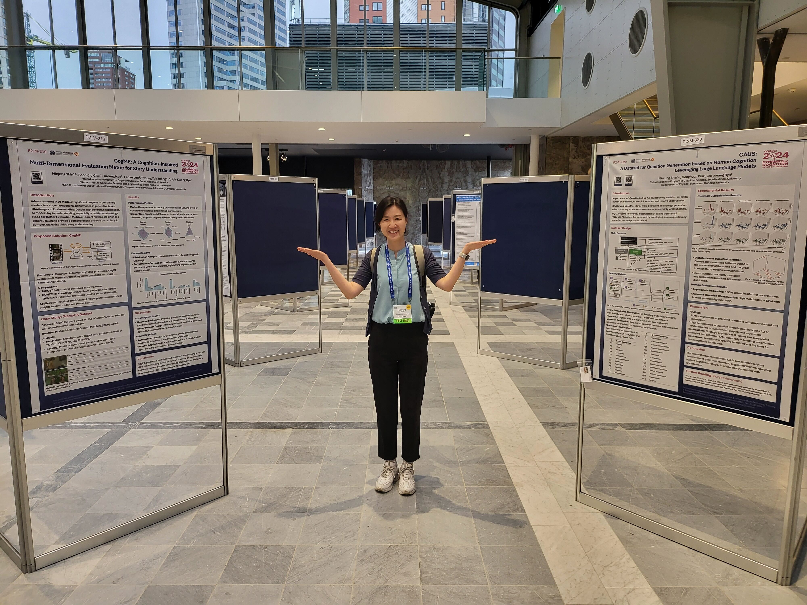

Description :
Minjung presented two posters at The 46th Annual Meeting of the Cognitive Science Society, which was held as an in-person meeting in Rotterdam, Netherlands.
The Annual Meeting of the Cognitive Science Society is a prestigious international conference in the field of cognitive science. It brings together researchers from various disciplines such as psychology, artificial intelligence, linguistics, neuroscience, and philosophy.

Minjung at the poster session in CogSci 2024, held in Rotterdam, Netherlands.
The full papers for the presentation can be found at the following proceedings:
1. Shin, M., Choi, S., Heo, Y. J., Lee, M., Zhang, B. T., & Ryu, J. K. (2024). CogME: A Cognition-Inspired Multi-Dimensional Evaluation Metric for Story Understanding. In Proceedings of the Annual Meeting of the Cognitive Science Society (Vol. 46). [link]
(Summary) This research proposes a method to gauge an agent's competence by observing its performance, which is a generalized approach to assessing intelligence. Given that "intelligence" lacks a precise definition or consensus, this method represents one of the best available options, similar to tests and psychological assessments we encounter in everyday contexts.
Good evaluations typically aim to measure thought processes rather than focus solely on results, though this is challenging in practice. Even simple tests strive to cover a diverse range of content and types within their scope, as the specific questions a subject struggles with can reveal areas of weak understanding.
The study introduces CogME, an evaluation metric designed to assess AI's story comprehension abilities. The research's originality lies in establishing criteria that reflect human cognitive processes and narrative elements, then using these to analyze given questions.
Instead of merely reporting a 73.4% accuracy rate for the MCM model, this approach visualizes the model's detailed strengths and weaknesses. Furthermore, it analyzes characteristics of the training materials used by the MCM model.
This method offers a nuanced way to evaluate AI capabilities, providing insights into both the model's performance and the nature of its training data. It represents a step towards more comprehensive and informative assessments of AI systems, particularly in the domain of language understanding and story comprehension.
2. Shin, M., Kim, D., & Ryu, J. K. (2024). CAUS: A Dataset for Question Generation based on Human Cognition Leveraging Large Language Models. In Proceedings of the Annual Meeting of the Cognitive Science Society (Vol. 46). [link]
(Summary) Questions are crucial in human intelligence development, as much learning occurs through dialogue and interaction. Questions are also a key prosocial behavior, serving as a useful strategy in situations requiring relationship-based goal achievement.
Large Language Models (LLMs) like ChatGPT, Gemini, Claude, and HyperclovaX often generate responses even when user queries are uncertain or ambiguous. This is due to their inherent design. Humans demonstrate remarkable adaptability in refining their prompts, showcasing intelligence that surpasses LLMs in this aspect.
This research aims to practically implement and verify LLMs' basic questioning capabilities (ability to ask questions and understand question characteristics). It mimics human cognitive processes for resolving uncertainty, identifying unclear aspects in given contexts, and generating diverse questions. The resulting dataset was published.
The study also performed a two-dimensional classification of the generated questions' characteristics. It was found that LLMs could appropriately grasp and classify the nuances of questions, even for quite detailed classification tasks.
